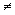

Let's look at one example. Suppose you are organizing an event
that costs $12 for everyone older than 8 and $6 for any one 8 years or
younger. One way to do this is to say the ticket is $12, unless you
are 8 or younger, then it is $6. In this case, you can write:
|
|
|
| ticket = 12;
if(age is 8 or younger) ticket = 6; |
double ticket = 12.00, age;
if(age <= 8) ticket = 6; |
There is another way to do this.
|
|
|
| if(age is 8 or younger)
ticket = 6; else ticket = 12; |
if(age <= 8)
ticket = 6; else ticket = 12; |
Both of these do the same thing. In both cases, you will change the flow of execution when you reach the statement; "age is 8 or younger". If that statement happens to be true, i.e., age is 8 or younger, then the value of ticket will change to $6, otherwise, you will go with its initialized value of $12.
In general, the statement in the parentheses is either TRUE or FALSE.
Depending on that being true or false, you will change the flow of execution
of the statements in the program. In order for your program to decide about
the flow of the execution, it uses a comparison operator. Examples
of comparison operators are:
1) equal to , = , which
will be written as ==
(2 ='s) in C++,
with a general form of: statement1==
statement2.
Example:
y ==
x
+ 1
2) not equal to , ,
which will be written as !=
in C++, with a general form of: statement1!=
statement2.
Example:
y !=
x
+ 1
3) less than , <,
which will be written as <
in C++, with a general form of: statement1<
statement2.
Example:
y <
x
+ 1
4) less than or equal to
,  ,
which will be written as <=
in C++, with a general form of: statement1<=
statement2.
Example:
y <=
x
+ 1
,
which will be written as <=
in C++, with a general form of: statement1<=
statement2.
Example:
y <=
x
+ 1
5) greater than , >,
which will be written as >
in C++, with a general form of: statement1>
statement2.
Example:
y >
x
+ 1
6) greater than or equal to
, ,
which will be written as >=
in C++, with a general form of: statement1>=
statement2.
Example:
y >=
x
+ 1
7) OR, which will be written as ||
(2 of the |'s) in C++, with a general form
of: statement1|| statement2.
Which may be True when either one of the two statements are TRUE.
8) AND, which will be written as &&
(2 of the &'s) in C++, with a general
form of: statement1 &&statement2.
Which may be True ONLY when both statements are TRUE.
Now that you have learned about changing the flow of control, let's write a program called ticket.cpp that asks users to enter an age and displays the cost of the ticket based on the criteria that was given above. Use both methods to make sure
// ticket.cpp - This program asks for an age and displays the
cost of the ticket
#include<iostream.h>
using namespace std;
int main( )
{
double age, ticket = 12;
cout << "Please enter the age \n";
cin >> age;
if(age <= 8)
ticket
= 6;
cout << "Your ticket costs " << ticket << endl;
return 0;
}
Exercise
22-1
Change the ticket.cpp program such that it displays $6 for people who
are 8 years old or younger OR 65 years or older.